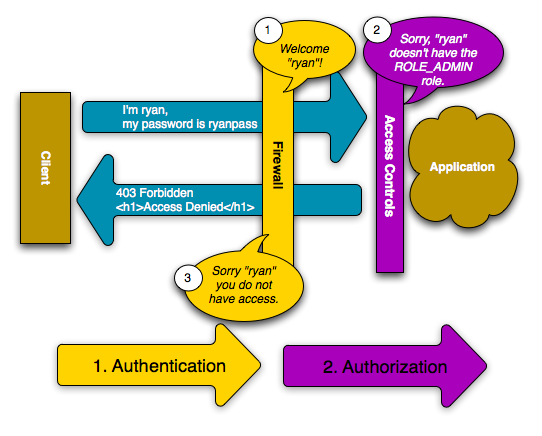

コンテンツ上部に更新日の記載のないページは、翻訳の内容が2.0相当のものになっております。最新の内容は原文のページをご確認ください。
セキュリティ¶
セキュリティは、特定のリソースに対するアクセス権限を持たないユーザからのアクセスを制御するために、２つのステップを行います。
まず第一のステップは、セキュリティシステムが、ユーザ認証で送られてくる情報から、そのユーザが誰かを識別することです。この処理は認証と呼ばれ、そのユーザが誰であるかを探そうとします。
そしてユーザを特定した後に、第二のステップとして、アクセスしようとしているリソースに対して、そのユーザがアクセス可能かどうかを判断します。この処理は承認と呼ばれ、そのユーザがある特定のアクションを行うことのできる権限を保持しているかどうかをチェックします。

もっとも良い学習方法はサンプルを見ることですので、早速始めましょう。
Note
Symfony の Security コンポーネント は、スタンドアロンの PHP ライブラリとして使用できます。
基本的なサンプル: HTTP 認証¶
セキュリティコンポーネントは、アプリケーションのコンフィギュレーションで設定できます。実際、最も標準的なセキュリティのセットアップは、正しいコンフィギュレーションを使用することです。以下の設定では /admin/* にマッチする全ての URL をセキュアにするよう Symfony に設定しています。そして、HTTP ベーシック認証 (古風なユーザ名/パスワードの入力ボックス) を使用してユーザに証明書を尋ねています:
- YAML
# app/config/security.yml security: firewalls: secured_area: pattern: ^/ anonymous: ~ http_basic: realm: "Secured Demo Area" access_control: - { path: ^/admin, roles: ROLE_ADMIN } providers: in_memory: users: ryan: { password: ryanpass, roles: 'ROLE_USER' } admin: { password: kitten, roles: 'ROLE_ADMIN' } encoders: Symfony\Component\Security\Core\User\User: plaintext
- XML
<!-- app/config/security.xml --> <srv:container xmlns="http://symfony.com/schema/dic/security" xmlns:xsi="http://www.w3.org/2001/XMLSchema-instance" xmlns:srv="http://symfony.com/schema/dic/services" xsi:schemaLocation="http://symfony.com/schema/dic/services http://symfony.com/schema/dic/services/services-1.0.xsd"> <config> <firewall name="secured_area" pattern="^/"> <anonymous /> <http-basic realm="Secured Demo Area" /> </firewall> <access-control> <rule path="^/admin" role="ROLE_ADMIN" /> </access-control> <provider name="in_memory"> <user name="ryan" password="ryanpass" roles="ROLE_USER" /> <user name="admin" password="kitten" roles="ROLE_ADMIN" /> </provider> <encoder class="Symfony\Component\Security\Core\User\User" algorithm="plaintext" /> </config> </srv:container>
- PHP
// app/config/security.php $container->loadFromExtension('security', array( 'firewalls' => array( 'secured_area' => array( 'pattern' => '^/', 'anonymous' => array(), 'http_basic' => array( 'realm' => 'Secured Demo Area', ), ), ), 'access_control' => array( array('path' => '^/admin', 'role' => 'ROLE_ADMIN'), ), 'providers' => array( 'in_memory' => array( 'users' => array( 'ryan' => array('password' => 'ryanpass', 'roles' => 'ROLE_USER'), 'admin' => array('password' => 'kitten', 'roles' => 'ROLE_ADMIN'), ), ), ), 'encoders' => array( 'Symfony\Component\Security\Core\User\User' => 'plaintext', ), ));
Tip
Symfony のスタンダードディストリビューションでは、セキュリティコンフィギュレーションは、別ファイルに分けてあります(例えば、app/config/security.yml など)。別ファイルに分けない際には、メインの設定ファイル(例えば、app/config/config.yml)に直接書くこともできます。
この設定の結果、以下のようなセキュリティシステムになりました:
- このシステムには２人のユーザがいます(ryan と admin)。
- HTTP ベーシック認証によってユーザ認証を行います。
- /admin/* にマッチする全ての URL がセキュアになり、そのURLには admin ユーザのみアクセス可能です。
- /admin/* にマッチしない全ての URL には、認証が無く、アクセス制限はありません。
セキュリティ機能がどのようになっているか、そして、設定の各部分がどう作用しているか、簡単に見てみましょう。
セキュリティ機能の仕組み: 認証と承認¶
Symfony のセキュリティシステムは認証によってユーザの特定を行います。そして、次にそのユーザが特定のリソースや URL にアクセス可能かどうかをチェックします。
ファイアーウォール (認証)¶
ユーザからファイアーウォールによって保護されている URL にリクエストがあった際に、セキュリティシステムは作動します。ファイアーウォールは、ユーザ認証が必要かどうかを判断し、必要であれば、同ユーザにレスポンスを返し、認証のプロセスを開始します。
ファイアーウォールは、受け取るリクエストの URL が、設定された正規表現 pattern の値にマッチした際に作動します。この例では、全ての受け取るリクエストは pattern (^/) にマッチします。ファイアーウォールが作動しているからといっても、全ての URL に対してユーザ名とパスワードの入力ボックスによる HTTP 認証が表示されるわけではありません。例えば、全てのユーザは /foo に認証のプロンプト無しにアクセスできます。

このファイアーウォールは、anonymous 設定パラメータによって匿名ユーザを許可しているからです。つまり、このファイアーウォールは完全な認証を必要としていません。foo にアクセスするための特別な権限は存在しないので、ユーザ認証無しに、このリクエストを行うことができます。
anonymous キーを削除してしまうと、このファイアーウォールは毎回ユーザの認証を行うようになります。
アクセス制御 (承認)¶
しかし、ユーザが /admin/foo にリクエストする際には処理は異なります。access_control 設定のセクションにより、正規表現のパターン ^/admin (/admin や /admin/* にマッチする全て)にマッチする全ての URL に ROLE_ADMIN 権限を必要としているからです。権限はほとんどの承認の基礎となります。ROLE_ADMIN 権限を持つユーザのみが /admin/foo にアクセスが可能です。

前のケースと同じように、ユーザが最初にリクエストを投げても、このファイアーウォールはユーザ識別を行いません。しかし、アクセス制御のレイヤーがユーザのアクセスを拒否する(匿名ユーザは ROLE_ADMIN 権限がありません)とすぐに、ファイアーウォールは認証処理を開始します。認証処理は、あなたの使用する認証メカニズム次第です。例えば、フォームログイン認証を使用する際には、ユーザはログインページへリダイレクトされます。また、HTTP 認証を使用する際にはユーザに HTTP 401 のレンスポンスを返し、ユーザ名とパスワードの入力ボックスを表示します。
そしてユーザは HTTP 認証を求めるアプリケーションに対し証明書を送信します。証明書が有効であれば、最初に送ったリクエストを再び試みることができます。
この例では、ユーザ ryan はこのファイアーウォールにおいて認証に成功します。しかし、ryan は ROLE_ADMIN の権限がないため、/admin/foo にアクセスすると拒否されます。結局、このユーザはアクセスが拒否されたというメッセージを見ることになります。
Tip
Symfony がユーザのアクセスを拒否すると、そのユーザにはエラー画面を表示し、 HTTP の403ステータスコード(Forbidden) を送ります。アクセス拒否のエラー画面は、クックブック Error Pages の403エラーページのカスタマイズを参考に、カスタマイズすることができます。
そして admin ユーザが admin/foo にリクエストをした際に、同じ処理が行われます。しかし、認証されているので、アクセス制御のレイヤーはそのリクエストを通すことになります:

あるユーザが保護されているリソースにリクエストをする際のフローは分かりやすく、また、とても柔軟です。後で見ることになりますが、認証はフォームログイン、X.509 認証、Twitter 認証など、いろいろな方法で操作することが可能です。認証方法に関係なく、リクエストフローはすべて同じなのです:
- ユーザが保護されたリソースにアクセスする。
- アプリケーションがユーザをログインフォームへリダイレクトする。
- ユーザがユーザ名とパスワードなどの証明書を送信する。
- ファイアーウォールがユーザを認証する。
- 認証されたユーザは最初に送ったリクエストを再度試みる。
Note
厳密には、ユーザ認証時の処理は、使用する認証メカニズムによって多少異なります。例えば、フォームログインを使用する際には、ユーザはフォームを処理する URL (/login_check)に、証明書を送信します。そして、最初に送ったリクエストの URL (/admin/foo)にリダイレクトされます。しかし、HTTP 認証の際には、ユーザは同じ URL (/admin/foo)に直接証明書を送信することになります。そして、同じリクエストの結果ページをリダイレクト無しにユーザに返します。
こういった違いは、問題となることはないはずですが、覚えておくと良いでしょう。
Tip
また、Symfony2 ではあらゆるものをセキュアにすることができるということを、後で学ぶことになります。特定のコントローラやオブジェクト、そして PHP のメソッドまでもです。
従来のログインフォームの使用¶
Tip
このセクションでは、 security.yml ファイルに定義されているハードコーディングされたユーザをそのまま使用します。そして、基本的なログインフォームの作り方を学びます。
データベースからユーザをロードする方法は、 データベースからセキュリティユーザをロードする方法(エンティティプロバイダ) を参照してください。そのクックブックの記事と、このセクションを読めば、データベースを使用したユーザのログインフォームを作成することができるようになるでしょう。
あなたのアプリケーションをファイアーウォールの管理下に配置する方法を学びました。そして、権限の必要な場所へのアクセスを保護する方法も学びました。HTTP 認証を使用すれば、全てのブラウザで動くユーザ名とパスワードの入力ボックスを、楽に活用することができます。しかし、Symfony はそれ以外の多くの認証メカニズムもサポートしています。詳細は Security Configuration Reference を参照してください。
このセクションでは、従来の HTML のログインフォームを用いたユーザ認証で、この処理を強化していきます。
まず、ファイアーウォールの元でフォームログインを有効化します:
- YAML
# app/config/config.yml security: firewalls: secured_area: pattern: ^/ anonymous: ~ form_login: login_path: /login check_path: /login_check
- XML
<!-- app/config/config.xml --> <srv:container xmlns="http://symfony.com/schema/dic/security" xmlns:xsi="http://www.w3.org/2001/XMLSchema-instance" xmlns:srv="http://symfony.com/schema/dic/services" xsi:schemaLocation="http://symfony.com/schema/dic/services http://symfony.com/schema/dic/services/services-1.0.xsd"> <config> <firewall name="secured_area" pattern="^/"> <anonymous /> <form-login login_path="/login" check_path="/login_check" /> </firewall> </config> </srv:container>
- PHP
// app/config/config.php $container->loadFromExtension('security', array( 'firewalls' => array( 'secured_area' => array( 'pattern' => '^/', 'anonymous' => array(), 'form_login' => array( 'login_path' => '/login', 'check_path' => '/login_check', ), ), ), ));
Tip
login_path や check_path の値をデフォルト値のまま使用し、カスタマイズする必要がなければ、設定は短くすることができます:
- YAML
form_login: ~
- XML
<form-login />
- PHP
'form_login' => array(),
これで、セキュリティシステムは認証処理を初期化することができましたので、ユーザをログインフォーム(デフォルトでは /login)へリダイレクトするようになりました。ログインフォームの見た目の実装は、あなたの仕事です。まず、２つのルートを作成します。１つはログインフォームを表示するルート(/login)です。もう１つはログインフォーム値を処理するルート(/login_check)です:
- YAML
# app/config/routing.yml login: pattern: /login defaults: { _controller: AcmeSecurityBundle:Security:login } login_check: pattern: /login_check
- XML
<!-- app/config/routing.xml --> <?xml version="1.0" encoding="UTF-8" ?> <routes xmlns="http://symfony.com/schema/routing" xmlns:xsi="http://www.w3.org/2001/XMLSchema-instance" xsi:schemaLocation="http://symfony.com/schema/routing http://symfony.com/schema/routing/routing-1.0.xsd"> <route id="login" pattern="/login"> <default key="_controller">AcmeSecurityBundle:Security:login</default> </route> <route id="login_check" pattern="/login_check" /> </routes>
- PHP
// app/config/routing.php use Symfony\Component\Routing\RouteCollection; use Symfony\Component\Routing\Route; $collection = new RouteCollection(); $collection->add('login', new Route('/login', array( '_controller' => 'AcmeDemoBundle:Security:login', ))); $collection->add('login_check', new Route('/login_check', array())); return $collection;
Note
ファイアーウォールが /login_check URL へのフォーム送信を自動的に見つけて処理するので、この URL のコントローラを実装する必要は ありません 。
New in version 2.1: Symfony 2.1 では、login_path check_path logout の URL を、それぞれ /login 、 /login_check 、 /logout (- `Logging Out`_ を参照してください) のようにルートを設定する 必要があります 。
login ルートの名前は重要ではありません。セキュリティシステムがログインが必要なユーザにリダイレクトするので、重要なのは(/login)ルートの URL が login_path の設定値にマッチすることです。
次はログインフォームを表示するコントローラを作成します:
// src/Acme/SecurityBundle/Controller/Main;
namespace Acme\SecurityBundle\Controller;
use Symfony\Bundle\FrameworkBundle\Controller\Controller;
use Symfony\Component\Security\Core\SecurityContext;
class SecurityController extends Controller
{
public function loginAction()
{
$request = $this->getRequest();
$session = $request->getSession();
// ログインエラーがあれば、ここで取得
if ($request->attributes->has(SecurityContext::AUTHENTICATION_ERROR)) {
$error = $request->attributes->get(SecurityContext::AUTHENTICATION_ERROR);
} else {
$error = $session->get(SecurityContext::AUTHENTICATION_ERROR);
}
return $this->render('AcmeSecurityBundle:Security:login.html.twig', array(
// ユーザによって前回入力された username
'last_username' => $session->get(SecurityContext::LAST_USERNAME),
'error' => $error,
));
}
}
ユーザがフォーム送信を行うと、セキュリティシステムは自動的にフォーム送信値を処理します。ユーザ名とパスワードで無効であった際には、コントローラはセキュリティシステムからフォームエラーの有を受け取り、ユーザにその内容を表示します。
つまり、セキュリティシステムがユーザ名とパスワードを処理し、ユーザ認証を行なってくれるので、あなたの実装するべきことは、ログインフォームの表示、そしてログインエラーがある際にはその内容の表示になります。
それでは、対応するテンプレートを作成しましょう:
- Twig
{# src/Acme/SecurityBundle/Resources/views/Security/login.html.twig #} {% if error %} <div>{{ error.message }}</div> {% endif %} <form action="{{ path('login_check') }}" method="post"> <label for="username">Username:</label> <input type="text" id="username" name="_username" value="{{ last_username }}" /> <label for="password">Password:</label> <input type="password" id="password" name="_password" /> {# 認証成功した際のリダイレクト URL を制御したい場合(詳細は以下に説明する) <input type="hidden" name="_target_path" value="/account" /> #} <input type="submit" name="login" /> </form>
- PHP
<?php // src/Acme/SecurityBundle/Resources/views/Security/login.html.php ?> <?php if ($error): ?> <div><?php echo $error->getMessage() ?></div> <?php endif; ?> <form action="<?php echo $view['router']->generate('login_check') ?>" method="post"> <label for="username">Username:</label> <input type="text" id="username" name="_username" value="<?php echo $last_username ?>" /> <label for="password">Password:</label> <input type="password" id="password" name="_password" /> <!-- 認証成功した際のリダイレクト URL を制御したい場合(詳細は以下に説明する) <input type="hidden" name="_target_path" value="/account" /> --> <input type="submit" name="login" /> </form>
Tip
テンプレートに渡される error 変数は AuthenticationException のインスタンスです。 error 変数は、認証失敗に関する機密な情報など、たくさんの情報を保持していますので、賢く使ってください。
このフォームには、必須条件はほとんどありません。まず login_check ルートに基づき、/login_check にフォームが送信されます。セキュリティシステムがフォーム送信値をインターセプトして、自動的にフォームを処理します。次に、セキュリティシステムは _username と _password で指定されているフィールド(これらのフィールド名については configured を参照してください)が送信されていることを想定します。
これでできました。フォームを送信すると、セキュリティシステムは自動的にユーザの証明を行い、ユーザの認証を行います、また、認証に失敗した際には、エラーを表示して再びログインフォームを返します。
全ての処理を復習します:
- ユーザは保護されたリソースへのアクセスを試みます。
- ファイアーウォールは、ログインフォーム(/login)へユーザをリダイレクトし、認証処理を開始します。
- /login ページはこのサンプルで作られたルートとコントローラを経て、ログインフォームを返します。
- ユーザはログインフォームを /login_check に送信します。
- セキュリティシステムは、リクエストをインターセプトし、ユーザが送信した証明書を調べ、認証を行います。そして、認証失敗をした際には、ログインフォームを再び返します。
デフォルトでは、送信された証明書が正しければ、ユーザは最初にリクエストしたページにリダイレクトされます(/admin/foo など)。ユーザが直接ログインページにリクエストしていた際には、 homepage にリダイレクトされます。もちろん特定の URL にリダイレクトするなど、カスタマイズもできます。
一般的なフォームログインの処理をカスタマイズする方法など、詳細は フォームログインをカスタマイズする方法 を参照してください。
承認¶
セキュリティ機能の第一ステップは必ずユーザの誰かを証明する処理をする認証となります。Symfony では、認証はフォームログイン、HTTP ベーシック認証、Facebook 認証など、あらゆる認証方法を使うことができます。
一度、ユーザが認証されると、承認を開始します。承認は、標準的で強力な方法を提供し、URL、モデルオブジェクト、メソッド呼び出しなどのリソースに対して、あるユーザがアクセス可能かどうかを判断します。つまり、承認処理は、それぞれのユーザに特定の権限を割り当てて、異なるリソースに対し異なる権限が必要である、ということによって作動します。
承認処理は、２つの異なる側面があります:
- あるユーザが特定の権限のセットを保持している。
- あるリソースへのアクセスに、特定の権限を必要としている。
このセクションでは、URL やメソッド呼び出しなどの異なるリソースをセキュアにする方法を学びます。それから後に、どのように権限が作られて、ユーザに割り当てられるのかを学びます。
特定の URL パターンをセキュアにする¶
アプリケーションの一部をセキュアにする最も基本的な方法は、全ての URL パターンをセキュアにすることです。それは、この章の最初のサンプルにありましたように、正規表現パターンの /^admin にマッチする全ての URL に ROLE_ADMIN 権限を必須にすることでした。
必要なだけ、 URL パターンを正規表現で定義することができます。
- YAML
# app/config/config.yml security: # ... access_control: - { path: ^/admin/users, roles: ROLE_SUPER_ADMIN } - { path: ^/admin, roles: ROLE_ADMIN }
- XML
<!-- app/config/config.xml --> <config> <!-- ... --> <access-control> <rule path="^/admin/users" role="ROLE_SUPER_ADMIN" /> <rule path="^/admin" role="ROLE_ADMIN" /> </access-control> </config>
- PHP
// app/config/config.php $container->loadFromExtension('security', array( // ... 'access_control' => array( array('path' => '^/admin/users', 'role' => 'ROLE_SUPER_ADMIN'), array('path' => '^/admin', 'role' => 'ROLE_ADMIN'), ), ));
Tip
^ をパスの先頭に追加することは、そのパターンから始まる URL にのみマッチすることを保証します。例えば、^ の無い単なる /admin パスは /admin/foo にマッチしますし、/foo/admin にもマッチしてしまいます。
Symfony2 は、受け取る全てのリクエストに対し、アクセス制御ルールへのマッチを探そうと試みます(最初にマッチしたものが優先されます)。ユーザが認証されていなければ、ユーザにログインする機会が与えられ、認証処理が始まります。しかし、ユーザが認証されているが、必要な権限がない場合は AccessDeniedException 例外が投げられます。そして、”access denied” のエラーページをユーザに返します。エラーページの詳細は、エラーページのカスタマイズ方法 を参照してください。
Symfony は最初にマッチしたアクセス制御ルールを使用するので、/admin/users/new のような URL は ROLE_SUPER_ADMIN 権限を必要とする最初のルールにマッチします。/admin/blog のような全ての URL は ROLE_ADMIN を必要とする２番目のルールにマッチします。
IP によるセキュア化¶
ルートに対するアクセスを IP に基づいて制限する必要があるときもあるでしょう。特に Edge Side Includes (ESI) を使用して、 “_internal” と命名されたルートを使用するときなどです。 ESI の使用では、ゲートウェイキャッシュがそのページ内のサブセクションの異なるキャッシュオプションを有効にする _internal ルートが必要とされます。このルートは、Symfony のスタンダードエディションのデフォルトでは ^/_internal 接頭辞が付いています（ルーティングファイルからこれらの行をアンコメントしていることを想定しています）
以下に、外部からのアクセスからこのルートに対するセキュア化の例を示します。
- YAML
# app/config/security.yml security: # ... access_control: - { path: ^/_internal, roles: IS_AUTHENTICATED_ANONYMOUSLY, ip: 127.0.0.1 }
- XML
<access-control> <rule path="^/_internal" role="IS_AUTHENTICATED_ANONYMOUSLY" ip="127.0.0.1" /> </access-control>
- PHP
'access_control' => array( array('path' => '^/_internal', 'role' => 'IS_AUTHENTICATED_ANONYMOUSLY', 'ip' => '127.0.0.1'), ),
チャンネルによるセキュア化¶
IP によるセキュア化と同じように、新しく aaccess_control のエントリに SSL の使用を追加するだけです。
- YAML
# app/config/security.yml security: # ... access_control: - { path: ^/cart/checkout, roles: IS_AUTHENTICATED_ANONYMOUSLY, requires_channel: https }
- XML
<access-control> <rule path="^/cart/checkout" role="IS_AUTHENTICATED_ANONYMOUSLY" requires_channel="https" /> </access-control>
- PHP
'access_control' => array( array('path' => '^/cart/checkout', 'role' => 'IS_AUTHENTICATED_ANONYMOUSLY', 'requires_channel' => 'https'), ),
コントローラをセキュアにする¶
URL パターンに基づくアプリケーションの保護は簡単でした。しかし、全てのケースにおいて、十分きめ細かいとは言えません。必要であれば、コントローラの内部から認証を強制させることも簡単にできます。
use Symfony\Component\Security\Core\Exception\AccessDeniedException
// ...
public function helloAction($name)
{
if (false === $this->get('security.context')->isGranted('ROLE_ADMIN')) {
throw new AccessDeniedException();
}
// ...
}
任意ですが、JMSSecurityExtraBundle をインストールして、アノテーションを用いてコントローラをセキュアにすることもできます。
use JMS\SecurityExtraBundle\Annotation\Secure;
/**
* @Secure(roles="ROLE_ADMIN")
*/
public function helloAction($name)
{
// ...
}
詳細は JMSSecurityExtraBundle のドキュメントを参照してください。Symfony のスタンダードディストリビューションを使用する際は、このバンドルはデフォルトで有効になっています。そうでなくても、簡単にダウンロードしてインストールすることができます。
他のサービスをセキュアにする¶
実際は、前のセクションで見た戦略と同じように、Symfony における全てのものは保護することができます。例えば、 PHP クラスを使用して、あるユーザから他のユーザにメールを送信するサービスがあったとします。特定の権限を持つユーザは、使用場所に関係無く、このクラスの使用を制限することができます。
アプリケーション内の異なるサービスやメソッド間をセキュアにする、セキュリティコンポーネントの使用方法に関する詳細は、アプリケーション内でサービスやメソッドをセキュアにする方法 を参照してください。
アクセス制御リスト (ACLs): 個々のデータベースオブジェクトをセキュアにする¶
ユーザが投稿に対してコメントのできるブログシステムを設計していることを想像してみてください。ユーザには自分のコメントを編集できるようにしたいとします。しかし、他のユーザのコメントの編集はできないようにしたいとします。また、管理者ユーザであれば、全てのコメントの編集を可能にしたいとします。
セキュリティコンポーネントは、任意のアクセス制御リスト(ACL)システムが付いてきます。アクセス制御リストシステムは、あなたのシステムのオブジェクトの個々のインスタンスへのアクセスを制御する必要する際に使用することができます。 ACL 無し で、あなたのシステムをセキュアにして、特定のユーザのみブログのコメントを編集できるようにすることはできます。しかし、 ACL が 有れば 、コメントごとの制限やアクセスを受け入れることもできるのです。
詳細は、クックブックの アクセス制御リスト(ACL) を参照してください。
ユーザ¶
前のセクションでは、あるリソースへの/ 権限/ のセットを必須とすることによって、異なるリソースの保護の仕方を学びました。このセクションでは、ユーザの承認の他の側面を探っていきます。
ユーザはどこから来た？ (ユーザプロバイダ)¶
認証の際に、ユーザは証明書のセット(だいたいの場合ユーザ名とパスワードになります)を送信します。認証システムの仕事は、ユーザのプールに対し、証明書のマッチをすることです。では、そのユーザのリストはどこから来るのでしょうか？
Symfony2 では、ユーザは、コンフィギュレーションファイル、データベーステーブル、ウェブサービスなど、あらゆるところに保管することができます。ユーザを認証システムに提供するする機能は総称して、”ユーザプロバイダ”と呼びます。Symfony2 では、２つの一般的なユーザプロバイダが標準で付いてきます。１つは、コンフィギュレーションファイルからユーザをロードし、もう１つは、データベーステーブルからユーザをロードします。
コンフィギュレーションファイルでユーザを特定する¶
ユーザを特定する最も簡単な方法は直接コンフィギュレーションファイルで指定する方法です。実際のところ、それは、この章のサンプルで今まで見てきた方法です。
- YAML
# app/config/config.yml security: # ... providers: default_provider: users: ryan: { password: ryanpass, roles: 'ROLE_USER' } admin: { password: kitten, roles: 'ROLE_ADMIN' }
- XML
<!-- app/config/config.xml --> <config> <!-- ... --> <provider name="default_provider"> <user name="ryan" password="ryanpass" roles="ROLE_USER" /> <user name="admin" password="kitten" roles="ROLE_ADMIN" /> </provider> </config>
- PHP
// app/config/config.php $container->loadFromExtension('security', array( // ... 'providers' => array( 'default_provider' => array( 'users' => array( 'ryan' => array('password' => 'ryanpass', 'roles' => 'ROLE_USER'), 'admin' => array('password' => 'kitten', 'roles' => 'ROLE_ADMIN'), ), ), ), ));
このユーザプロバイダは、ユーザ情報がデータベースに保管されていないので、”in-memory” ユーザプロバイダと呼ばれます。実際のユーザオブジェクトは Symfony によって提供されます(User)。
Tip
全てのユーザプロバイダは、users 設定値にユーザをリスト化して特定化することにより、コンフィギュレーションから直接ユーザをロードすることができます。
Caution
ユーザ名が 77 などの数字であった際や、user-name のようにハイフンを含んでいる際には、YAMLでのユーザ指定は代替のシンタックスを使用する必要があります:
users:
- { name: 77, password: pass, roles: 'ROLE_USER' }
- { name: user-name, password: pass, roles: 'ROLE_USER' }
小さなサイトにおいては、この方法によるセットアップが速く簡単でしょう。より複雑なシステムでは、データベースからユーザをロードすることになるでしょう。
データベースからユーザをロードする¶
Doctrine ORM を介してユーザをロードするには、User クラスを作成し entity プロバイダを設定するだけなので簡単です。
Tip
Doctrine ORM や ODM を介してユーザを保存するすることを可能とする、質の高いオープンソースのバンドルが入手可能です。詳細は GitHub 上の FOSUserBundle を参照してください。
このアプローチでは、まず、独自の User クラスを作成します。これはデータベースに保存されます。
// src/Acme/UserBundle/Entity/User.php
namespace Acme\UserBundle\Entity;
use Symfony\Component\Security\Core\User\UserInterface;
use Doctrine\ORM\Mapping as ORM;
/**
* @ORM\Entity
*/
class User implements UserInterface
{
/**
* @ORM\Column(type="string", length="255")
*/
protected $username;
// ...
}
セキュリティシステムを考慮する限り、独自に作成するカスタムユーザクラスの唯一の必須条件は、UserInterface インタフェースを実装することです。つまり、このインタフェースさえ実装すれば”user”はどんなものでも構いません。
New in version 2.1: Symfony 2.1 では、 equals メソッドが UserInterface から取り除かれました。デフォルトの比較のロジックの実装をオーバーライドする必要がある際には、 EquatableInterface インタフェースを実装してください。
Note
ユーザオブジェクトは、リクエストの間中、 シリアライズ化され、セッションに保存されますので、ユーザオブジェクトに\Serializable インタフェースを実装することを推奨します。特に User クラスがプライベート属性を持つ親クラスから継承している際に、重要です。
次に entity ユーザプロバイダを設定して、作成した User クラスを指定します:
- YAML
# app/config/security.yml security: providers: main: entity: { class: Acme\UserBundle\Entity\User, property: username }
- XML
<!-- app/config/security.xml --> <config> <provider name="main"> <entity class="Acme\UserBundle\Entity\User" property="username" /> </provider> </config>
- PHP
// app/config/security.php $container->loadFromExtension('security', array( 'providers' => array( 'main' => array( 'entity' => array('class' => 'Acme\UserBundle\Entity\User', 'property' => 'username'), ), ), ));
この新しいプロバイダの導入では、認証システムは username フィールドを使用してデータベースから User オブジェクトをロードしようとします。
Note
このサンプルでは、entity プロバイダの背後にある基本的な考え方を見せました。より実践的なサンプルは、データベースからセキュリティユーザをロードする方法(エンティティプロバイダ) を参照してください。
ウェブサービスを介してユーザをロードするなどの、カスタムプロバイダの作成方法に関する詳細は、カスタムユーザプロバイダの作成方法 を参照してください。
ユーザパスワードのエンコーディング¶
シンプルにするために、これまでの全てのサンプルでは、コンフィギュレーションファイルやデータベースに、ユーザのパスワードを平文で保存してきました。もちろん実際のアプリケーションでは、セキュリティの理由から、ユーザのパスワードをエンコードしたいと思うでしょう。パスワードのエンコードは、User クラスをいくつかのビルトインされている “encoders” にマッピングすることによって簡単に行うことができます。例えばユーザをメモリ上に保存し、sha1 を介してパスワードをわかりにくくするためには次のようにします:
- YAML
# app/config/config.yml security: # ... providers: in_memory: users: ryan: { password: bb87a29949f3a1ee0559f8a57357487151281386, roles: 'ROLE_USER' } admin: { password: 74913f5cd5f61ec0bcfdb775414c2fb3d161b620, roles: 'ROLE_ADMIN' } encoders: Symfony\Component\Security\Core\User\User: algorithm: sha1 iterations: 1 encode_as_base64: false
- XML
<!-- app/config/config.xml --> <config> <!-- ... --> <provider name="in_memory"> <user name="ryan" password="bb87a29949f3a1ee0559f8a57357487151281386" roles="ROLE_USER" /> <user name="admin" password="74913f5cd5f61ec0bcfdb775414c2fb3d161b620" roles="ROLE_ADMIN" /> </provider> <encoder class="Symfony\Component\Security\Core\User\User" algorithm="sha1" iterations="1" encode_as_base64="false" /> </config>
- PHP
// app/config/config.php $container->loadFromExtension('security', array( // ... 'providers' => array( 'in_memory' => array( 'users' => array( 'ryan' => array('password' => 'bb87a29949f3a1ee0559f8a57357487151281386', 'roles' => 'ROLE_USER'), 'admin' => array('password' => '74913f5cd5f61ec0bcfdb775414c2fb3d161b620', 'roles' => 'ROLE_ADMIN'), ), ), ), 'encoders' => array( 'Symfony\Component\Security\Core\User\User' => array( 'algorithm' => 'sha1', 'iterations' => 1, 'encode_as_base64' => false, ), ), ));
iterations を 1 に、encode_as_base64 を false にセットすることによって、パスワードは追加のエンコード無しに sha1 アルゴリズムを一度走らせたパスワードとなります。ハッシュ化されたパスワードはプログラム(hash('sha1', ryanpass'))でも、functions-online.com のようなオンラインツールでも作ることができます。
もしユーザを動的に作成して、データベースに保存しているのであれば、さらに強固なハッシュアルゴリズムを使うことができ、実際のパスワードエンコーダーオブジェクトをパスワードをエンコードさせることができます。例えば、上のサンプルのように、User オブジェクトが Acme\UserBundle\Entity\User であったとします。まず、ユーザのエンコードを設定します。
- YAML
# app/config/config.yml security: # ... encoders: Acme\UserBundle\Entity\User: sha512
- XML
<!-- app/config/config.xml --> <config> <!-- ... --> <encoder class="Acme\UserBundle\Entity\User" algorithm="sha512" /> </config>
- PHP
// app/config/config.php $container->loadFromExtension('security', array( // ... 'encoders' => array( 'Acme\UserBundle\Entity\User' => 'sha512', ), ));
このケースでは、さらに強力な sha512 アルゴリズムを使用しています。また、単にアルゴリズムを (sha512)と文字列で指定したため、システムはパスワードを5000回連続でハッシュ化し、base64 でエンコードをします。言い換えると、パスワードは難読化され、ハッシュ化されたパスワードはデコードできなくなります(ハッシュ化されたパスワードから実際のパスワードを判断することができません)。
ユーザ登録フォームのようなものがあれば、あなたがユーザのためにハッシュ化されたパスワードを判断できるべきす。User オブジェクトに、どんなアルゴリズムで設定していても、ハッシュ化されたパスワードは常にコントローラから以下の方法で判断されます:
$factory = $this->get('security.encoder_factory');
$user = new Acme\UserBundle\Entity\User();
$encoder = $factory->getEncoder($user);
$password = $encoder->encodePassword('ryanpass', $user->getSalt());
$user->setPassword($password);
User オブジェクトの読み出し¶
認証後、現在のユーザの User オブジェクトには security.context サービスを介してアクセスできます。コントローラから使うには、次のようにします:
public function indexAction()
{
$user = $this->get('security.context')->getToken()->getUser();
}
コントローラの中では、次のショートカットが使えます
public function indexAction()
{
$user = $this->getUser();
}
Note
匿名ユーザは、表向きには、匿名ユーザのオブジェクトの isAuthenticated() メソッドが true を返すので認証されます。ユーザが実際に認証されたかを確認するには、IS_AUTHENTICATED_ANONYMOUSLY 権限をチェックしてください。
Twig のテンプレートでは、このオブジェクトは、 app.user キーで参照可能です。 app.user は、内部的には、 GlobalVariables::getUser() メソッドを呼んでいます:
- Twig
<p>Username: {{ app.user.username }}</p>
複数のユーザプロバイダの使用¶
HTTP 認証やフォームログインなどの全ての認証メカニズムは、厳密に１つのユーザプロバイダを使用し、デフォルトとして最初に宣言されたユーザプロバイダを使用します。しかし、特定のユーザはコンフィギュレーションファイルから、残りのユーザはデータベースから認証したいときはどうでしょう？これは、２つ一緒につなげる新しいプロバイダを作成することにより可能になります:
- YAML
# app/config/security.yml security: providers: chain_provider: providers: [in_memory, user_db] in_memory: memory: users: foo: { password: test } user_db: entity: { class: Acme\UserBundle\Entity\User, property: username }
- XML
<!-- app/config/config.xml --> <config> <provider name="chain_provider"> <provider>in_memory</provider> <provider>user_db</provider> </provider> <provider name="in_memory"> <memory> <user name="foo" password="test" /> </memory> </provider> <provider name="user_db"> <entity class="Acme\UserBundle\Entity\User" property="username" /> </provider> </config>
- PHP
// app/config/config.php $container->loadFromExtension('security', array( 'providers' => array( 'chain_provider' => array( 'providers' => array('in_memory', 'user_db'), ), 'in_memory' => array( 'memory' => array( 'users' => array( 'foo' => array('password' => 'test'), ), ), ), 'user_db' => array( 'entity' => array('class' => 'Acme\UserBundle\Entity\User', 'property' => 'username'), ), ), ));
これで、chain_provider を最初に指定したため、全ての認証メカニズムは chain_provider を使用するようになりました。chain_provider は、in_memory と user_db のプロバイダの両方からユーザをロードしようとします。
Tip
in_memory のユーザと user_db のユーザを分ける理由がなければ、２つのソースを１つのプロバイダとして結合することによって、より簡単に達成することができます:
- YAML
# app/config/security.yml security: providers: main_provider: memory: users: foo: { password: test } entity: { class: Acme\UserBundle\Entity\User, property: username }
- XML
<!-- app/config/config.xml --> <config> <provider name=="main_provider"> <memory> <user name="foo" password="test" /> </memory> <entity class="Acme\UserBundle\Entity\User" property="username" /> </provider> </config>
- PHP
// app/config/config.php $container->loadFromExtension('security', array( 'providers' => array( 'main_provider' => array( 'memory' => array( 'users' => array( 'foo' => array('password' => 'test'), ), ), 'entity' => array('class' => 'Acme\UserBundle\Entity\User', 'property' => 'username'), ), ), ));
また、特定のプロバイダを使用するため、ファイアーウォールや個々の認証メカニズムを設定することも可能です。くどいようですが、プロバイダが明確に指定されていなければ、最初のプロバイダが常に使用されます:
- YAML
# app/config/config.yml security: firewalls: secured_area: # ... provider: user_db http_basic: realm: "Secured Demo Area" provider: in_memory form_login: ~
- XML
<!-- app/config/config.xml --> <config> <firewall name="secured_area" pattern="^/" provider="user_db"> <!-- ... --> <http-basic realm="Secured Demo Area" provider="in_memory" /> <form-login /> </firewall> </config>
- PHP
// app/config/config.php $container->loadFromExtension('security', array( 'firewalls' => array( 'secured_area' => array( // ... 'provider' => 'user_db', 'http_basic' => array( // ... 'provider' => 'in_memory', ), 'form_login' => array(), ), ), ));
この例では、ユーザが HTTP 認証を介してログインを試みようとすると、認証システムは in_memory ユーザプロバイダを使用します。しかし、ユーザがフォームログインを介してログインを試みようとすると、全体のデフォルトである user_db プロバイダが使用されます。
ユーザプロバイダとファイアーウォールの設定に関する詳細は、SecurityBundle 設定 (“security”) を参照してください。
権限¶
“role” のアイデアは、認証処理のキーとなります。それぞれのユーザは権限のセットを割り当てられ、それぞれのリソースは１つ、またはそれ以上の権限を必要とします。ユーザが必要な権限を持っていれば、アクセスは可能となり、そうでなければ拒否されます。
権限はとてもシンプルで、必要であれば独自に作り、使うことができるように、基本的にひと続きになっています。例えば、ウェブサイトのブログ管理のセクションへのアクセスを制限する必要があったとします。その際には、ROLE_BLOG_ADMIN 権限を使用しそのセクションを保護することができます。この権限は、どこでも定義することができます。これからだって使うことができます。
Note
すべての権限は、Symfony2 によって管理されるため、ROLE_ 接頭辞から始めなければなりません。より高度な Role 専用のクラスを定義する際には、ROLE_ 接頭辞は使用しないでください。
階層的な権限¶
ユーザにたくさんの権限を結びつける代わりに、権限の階層を作成し、権限の継承ルールを定義することができます:
- YAML
# app/config/security.yml security: role_hierarchy: ROLE_ADMIN: ROLE_USER ROLE_SUPER_ADMIN: [ROLE_ADMIN, ROLE_ALLOWED_TO_SWITCH]
- XML
<!-- app/config/security.xml --> <config> <role-hierarchy> <role id="ROLE_ADMIN">ROLE_USER</role> <role id="ROLE_SUPER_ADMIN">ROLE_ADMIN, ROLE_ALLOWED_TO_SWITCH</role> </role-hierarchy> </config>
- PHP
// app/config/security.php $container->loadFromExtension('security', array( 'role_hierarchy' => array( 'ROLE_ADMIN' => 'ROLE_USER', 'ROLE_SUPER_ADMIN' => array('ROLE_ADMIN', 'ROLE_ALLOWED_TO_SWITCH'), ), ));
上記の設定では、ROLE_ADMIN 権限を持つユーザは、ROLE_USER 権限をも持つことになります。ROLE_SUPER_ADMIN 権限は、ROLE_ADMIN,ROLE_ALLOWED_TO_SWITCH, そして ROLE_USER を持つことになります。
ログアウト¶
ほとんどの場合、ユーザにログアウトもできるようにさせたいでしょう。幸いにも、logout の設定値を有効化することにより、ファイアーウォールはログアウトを自動的に処理することができます:
- YAML
# app/config/config.yml security: firewalls: secured_area: # ... logout: path: /logout target: / # ...
- XML
<!-- app/config/config.xml --> <config> <firewall name="secured_area" pattern="^/"> <!-- ... --> <logout path="/logout" target="/" /> </firewall> <!-- ... --> </config>
- PHP
// app/config/config.php $container->loadFromExtension('security', array( 'firewalls' => array( 'secured_area' => array( // ... 'logout' => array('path' => 'logout', 'target' => '/'), ), ), // ... ));
ファイアーウォール内で上記のように設定すれば、ユーザを /logout (path で設定したルートの URL)に導くだけで、現在のユーザの認証を解除できます。path と target の設定値の両方のデフォルトはここで指定した値です。それらをカスタマイズする必要がない場合は、省略できるので、コンフィギュレーションを短くすることができます。
- YAML
logout: ~
- XML
<logout />
- PHP
'logout' => array(),
ファイアーウォールが全ての面倒を見るため、/logout URL のコントローラを実装する必要がないことを気に留めておいてください。しかし、その URL を生成するために使うルートを作成したいと思うかもしれません:
Warning
Symfony 2.1 では、ログアウトのパスに対応するルートを指定する 必要があります 。このルートが無ければ、ログアウトは機能しません。
- YAML
# app/config/routing.yml logout: pattern: /logout
- XML
<!-- app/config/routing.xml --> <?xml version="1.0" encoding="UTF-8" ?> <routes xmlns="http://symfony.com/schema/routing" xmlns:xsi="http://www.w3.org/2001/XMLSchema-instance" xsi:schemaLocation="http://symfony.com/schema/routing http://symfony.com/schema/routing/routing-1.0.xsd"> <route id="logout" pattern="/logout" /> </routes>
- PHP
// app/config/routing.php use Symfony\Component\Routing\RouteCollection; use Symfony\Component\Routing\Route; $collection = new RouteCollection(); $collection->add('logout', new Route('/logout', array())); return $collection;
ユーザが一旦ログアウトすると、そのユーザは、上記の target の値によって定義されたパス(homepage など)にリダイレクトされます。ログアウトの設定に関する詳細は Security Configuration Reference を参照してください。
テンプレートにおけるアクセス制御¶
テンプレートの中で、現在のユーザが権限を持っているかを調べるには、ビルトインヘルパー関数を使用します:
- Twig
{% if is_granted('ROLE_ADMIN') %} <a href="...">Delete</a> {% endif %}
- PHP
<?php if ($view['security']->isGranted('ROLE_ADMIN')): ?> <a href="...">Delete</a> <?php endif; ?>
Note
ファイアーウォールが有効でない URL で、この関数を使用すると例外が投げられます。くどいようですが、この章で見られるように、全ての URL をカバーするメインのファイアーウォールはほとんど場合において、良いアイデアです。
コントローラにおけるアクセス制御¶
コントローラから、現在のユーザが権限を持っているか調べるには、セキュリティコンテキストの isGranted メソッドを使用してください:
public function indexAction()
{
// 管理者ユーザには異なる内容を表示します
if($this->get('security.context')->isGranted('ROLE_ADMIN')) {
// 管理者ユーザ用の内容のロードはここ
}
// 正規の内容のロードはここ
}
Note
ファイアーウォールは有効になっている必要があります。そうでなければ、isGranted メソッドが呼ばれた際に例外が投げられます。詳細は、上記のテンプレートのセクションにおける Note を参照してください。
他のユーザになりすます¶
ときどき、ログアウト、ログインを繰り返すこと無しに、あるユーザから他のユーザに切り替えることができると便利ですね。例えばデバッグをしている際や、特定のユーザのみ再現されるバグを理解する際などです。switch_user ファイアーウォールリスナーを有効化することによって簡単に実現することができます:
- YAML
# app/config/security.yml security: firewalls: main: # ... switch_user: true
- XML
<!-- app/config/security.xml --> <config> <firewall> <!-- ... --> <switch-user /> </firewall> </config>
- PHP
// app/config/security.php $container->loadFromExtension('security', array( 'firewalls' => array( 'main'=> array( // ... 'switch_user' => true ), ), ));
他のユーザに切り替えるには、現在の URL に _switch_user パラメータをクエリー文字列に加えて、ユーザ名をその値に加えるだけです:
元のユーザに戻りたいときは、特別なユーザ名 exit を使用します:
もちろん、この機能は特定の小さなユーザグループに利用可能とさせる必要があります。デフォルトでは、ROLE_ALLOWED_TO_SWITCH 権限を持つユーザのみがアクセス可能です。権限の名前は、role のセッティングから変更することができます。追加のセキュリティ対策として、parameter セッティングからクエリーパラメータを変更することもできます:
- YAML
# app/config/security.yml security: firewalls: main: // ... switch_user: { role: ROLE_ADMIN, parameter: _want_to_be_this_user }
- XML
<!-- app/config/security.xml --> <config> <firewall> <!-- ... --> <switch-user role="ROLE_ADMIN" parameter="_want_to_be_this_user" /> </firewall> </config>
- PHP
// app/config/security.php $container->loadFromExtension('security', array( 'firewalls' => array( 'main'=> array( // ... 'switch_user' => array('role' => 'ROLE_ADMIN', 'parameter' => '_want_to_be_this_user'), ), ), ));
ステートレス認証¶
デフォルトでは、Symfony2 は、ユーザのセキュリティコンテキストを持続するためにクッキー(セッション)を使用します。しかし、証明書や HTTP 認証を使用する際には、毎回のリクエストで証明書が利用可能なため、持続する必要ありません。こういったケースでは、リクエスト以外何も保存する必要がなければ、ステートレス認証を有効化することができます。つまり、Symfony2 によってクッキーは作られません:
- YAML
# app/config/security.yml security: firewalls: main: http_basic: ~ stateless: true
- XML
<!-- app/config/security.xml --> <config> <firewall stateless="true"> <http-basic /> </firewall> </config>
- PHP
// app/config/security.php $container->loadFromExtension('security', array( 'firewalls' => array( 'main' => array('http_basic' => array(), 'stateless' => true), ), ));
Note
フォームログインを使用する際には、 stateless を true に指定していても、Symfony2 はクッキーを作成します。
最後に¶
セキュリティ機能は、あなたのアプリケーションの深く複雑な問題を正しく解決してくれます。幸いにも、Symfony のセキュリティコンポーネントは、認証と承認をベースにした実績のあるセキュリティモデルに沿っています。認証は、常に最初に起こり、HTTP 認証やログインフォームなどのいくつもの異なる方法を通して、ユーザの同一性を判断するファイアーウォールによって処理されます。クックブックでは、”remember me”クッキー機能の実装方法を含め、他の方法で認証処理を実装したサンプルを見つけることができます。
ユーザがいったん認証されれば、認証の層は、ユーザが特定のリソースへのアクセス権を保持しているか判断することができます。ほとんどの場合において、権限は URL、クラス、メソッドに適用され、ユーザに権限が無い際には、アクセスが拒否されます。しかし、認証レイヤーはもっと深く考えられており、ユーザが与えられたリソースにアクセスできるかどうかを、複数の関係者が判断できるといったような “voting” のシステムに沿っています。このことに関するトピックの詳細は、クックブックを参照してください。